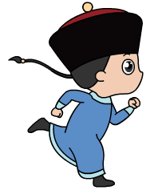

{% extends "../_njk/base.njk" %} {% block main %}

<!-- 加载页面 -->
<section class="section section-loading show">
  <div class="loading-wrapper">
    <div class="loading-progress">
      <div class="loading-progress-outer">
        <div class="loading-progress-inner">
          
        </div>
      </div>
    </div>
    <div class="loading-percent">0%</div>
  </div>
</section>

<!-- 启动页面 -->
<section class="section section-start">
  <!-- 人物动画 -->
  <div class="start-person">
    <div class="start-person-1"></div>
    <div class="start-person-2"></div>
  </div>
  <!-- 页面光效 -->
  <div class="start-light"></div>
  <!-- 花瓣雨效果 -->
  <div class="flower-canvas">
    <canvas id="canvasStart"></canvas>
  </div>

  <!-- 标题文本 -->
  <div class="start-text-1"></div>
  <!-- 右边文本 -->
  <div class="start-text-2"></div>
  <!-- 按钮 加入群聊 -->
  <div class="start-btn-bar">
    <div class="btn start-btn">
      加入群聊
    </div>
  </div>
</section>

<!-- 动画页面 - 对话框页面 -->
<section class="section section-chat">
  <div id="animation_container" style="width:750px; height:1624px">
    <canvas
      id="chatCanvas"
      width="750"
      height="1624"
      style="position: absolute; display: block;"
    ></canvas>
    <div
      id="dom_overlay_container"
      style="pointer-events:none; overflow:hidden; width:750px; height:1624px; position: absolute; left: 0px; top: 0px; display: block;"
    ></div>
  </div>
  <div id="animateClickPad"></div>
</section>

<!-- 动画页面 - 对话流程中 联想页面 -->
<section class="section section-think">
  <div class="think-bg"></div>
  <!-- 第一个联想 -->
  <div class="think-pop" id="gardenPop">
    <!-- 皇上 -->
    <div class="think-person"></div>
    <!-- 问号 -->
    <div class="think-question"></div>
  </div>
  <!-- 第二次联想 -->
  <div class="think-pop" id="yanziPop">
    <div class="think-person"></div>
    <div class="think-question"></div>
  </div>
  <!-- 盘他 -->
  <div class="think-panta" id="pantaPop">
    <div class="think-panta-person"></div>
    <div class="think-panta-t think-panta-t-1"></div>
    <div class="think-panta-t think-panta-t-2"></div>
  </div>
  <!-- 第一次联想视频 -->
  <div class="think-canvas" id="gardenBox">
    <canvas id="gardenCanvas"></canvas>
  </div>
  <!-- 第二次联想视频 -->
  <div class="think-canvas" id="yanziBox">
    <canvas id="yanziCanvas"></canvas>
    <canvas id="yanziPopCanvas"></canvas>
  </div>
</section>

<!-- 动画页面 - 杨贵妃收到消息页面 -->
<section class="section section-message">
  <div class="message-canvas">
    <canvas id="msgDqqCanvas"></canvas>
  </div>
  <div class="message-text"></div>
  <div class="message-msg"></div>
</section>

<!-- 年费SVIP通知 -->
<section class="section section-svip">
  <div class="flower-canvas">
    <canvas id="canvasSvip"></canvas>
  </div>

  <div class="svip-wrapper">
    <div class="svip-text svip-text-1"></div>
    <div class="svip-text svip-text-2"></div>
    <div class="svip-text svip-text-3"></div>
    <div class="svip-text svip-text-4"></div>
    <div class="svip-text svip-text-5"></div>
    <div class="svip-text svip-text-6"></div>
  </div>
</section>

<!-- 动画页面 - 杨贵妃通话前 -->
<section class="section section-call">
  <!-- 波形canvas -->
  <div class="call-canvas">
    <canvas id="waveCanvas"></canvas>
  </div>
  <!-- 唐玄宗头像 -->
  <div class="call-avatar"></div>
  <!-- 底部框 -->
  <div class="call-answer-wrapper">
    <!-- 接听按钮 -->
    <div class="call-answer"></div>
  </div>
</section>

<!-- 动画页面 - 通话中 -->
<section class="section section-calling">
  <!-- 唐玄宗 -->
  <div class="calling-king">
    <div class="calling-pop calling-pop-1"></div>
    <div class="calling-pop calling-pop-2"></div>
    <div class="calling-pop calling-pop-3"></div>
  </div>
  <!-- 杨贵妃 -->
  <div class="calling-queen">
    <div class="calling-pop calling-pop-4"></div>
  </div>
  <!-- 波形canvas -->
  <!-- <div class="calling-canvas"></div> -->
  <!-- 底部框 -->
  <div class="calling-answer-wrapper">
    <!-- 接听按钮 -->
    <div class="calling-answer"></div>
  </div>
</section>

<!-- 落地页面 -->
<section class="section section-end">
  <div class="end-text"></div>
  <div class="end-person"></div>
  <div class="flower-canvas">
    <canvas id="canvasEnd"></canvas>
  </div>

  <div class="end-btn-bar">
    <div class="btn end-btn">开通SVIP</div>
    <div class="btn end-btn">分享给好友</div>
  </div>
</section>

<section class="fixed-bar">
  <div class="bgm-toggle" id="bgmBtn"></div>
</section>
{% endblock %} {% block javascript %}
<script>
var staticPrefix = './'
// var staticPrefix = 'http://cdnmeidi.perpower.cn/520/'

</script>
<script src="https://cdnjs.cloudflare.com/ajax/libs/zepto/1.2.0/zepto.min.js"></script>
<!-- <script src="./js/zepto.min.js"></script> -->
<!-- <script src="https://cdnjs.cloudflare.com/ajax/libs/howler/2.1.1/howler.min.js"></script> -->

<!-- 修改后 -->
<!-- <script src="https://code.createjs.com/1.0.0/createjs.min.js"></script> -->
<script src="./js/animatedata.js"></script>
<script src="./js/create.js"></script>

<!-- 引入动画模板js -->
<script src="./js/main-h5.js"></script>
<!-- 引入页面js -->
<script src="./js/build.js"></script>

{% endblock %}
